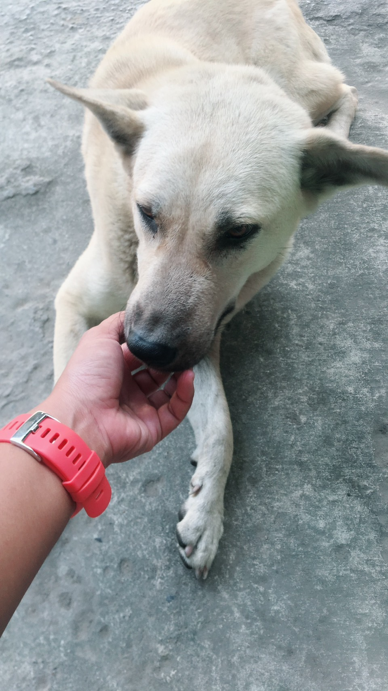

I will survive
Gloria Gaynor
original video

First, I was afraid, I was petrified
Kept thinking,
I could never live, without you by my side
But then I spent so many nights thinking, how you did me wrong
And I grew strong and I learned how to get along
And so you're back, from outer space
I just walked in to find you here
With that sad look upon your face
I should have changed that stupid lock
I should have made you leave your key
If I'd a known for just one second
You'd be back to bother me
Woah now go, walk out the door, just turn around now
'Cause you're not welcome anymore
Weren't you the one who tried to hurt me with goodbye
Did you think I'd crumble? Did you think I'd lay down and die?
No, not I, I will survive
Oh as long as I know how to love, I know I'll stay alive
I've got all my life to live and I've got all my love to give
And I'll survive, I will survive (hey, hey)
It took all the strength not to fall apart
Just trying hard to mend the pieces of my broken heart
And I spent oh so many nights just feeling sorry for myself
I used to cry, but now I hold my head up high
And you see me, somebody new
I'm not that chained up little person still in love with you
And so you felt like dropping in, and just expect me to be free
ut now I'm saving all my loving for someone who's loving me
Go on go, walk out the door, just turn around now
'Cause you're not welcome anymore
Weren't you the one who tried to break me with goodbye
Did you think I'd crumble, did you think I'd lay down and die?
Oh no, not I, I will survive
Oh as long as I know how to love, I know I'll stay alive
I've got all my life to live and I've got all my love to give
And I'll survive, I will survive (oh)
Go on now go, walk out the door, just turn around now
'Cause you're not welcome anymore
Weren't you the one who tried to break me with goodbye
Did you think I'd crumble? Did you think I'd lay down and die?
Oh no, not I, I will survive
Oh as long as I know how to love, I know I'll stay alive
I've got my life to live and I've got all my love to give
And I'll survive, I will survive
I will survive
At first, I was afraid, I was petrified
Kept thinking, I could never live, without you by my side
But then I spent so many nights thinking, how you did me wrong
And I grew strong and I learned how to get along
And so you're back, from outer space